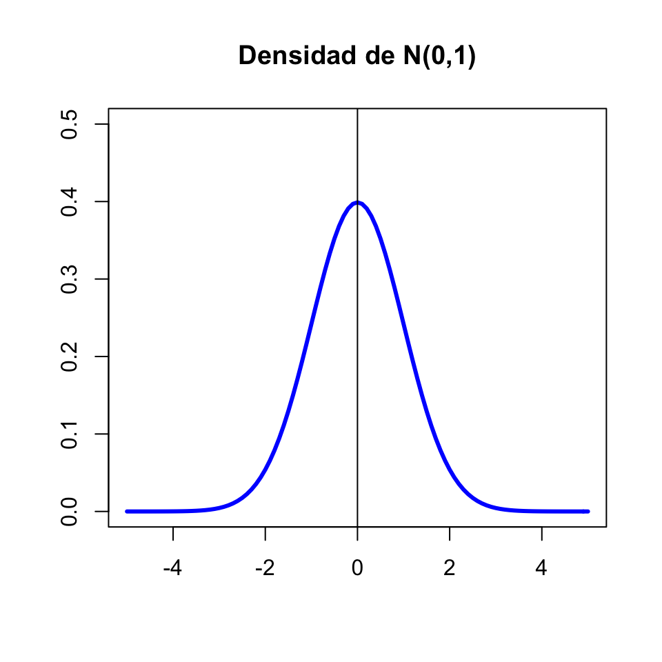

Lección 11 Variables aleatorias continuas
Recordad que una variable aleatoria continua toma valores continuos. Por ejemplo:
- Peso de una persona
- Nivel de colesterol en sangre
- Diámetro de un tumor
En este curso vamos a restringirnos a variables aleatorias continuas \(X: \Omega\to \mathbb{R}\) que satisfacen la siguiente propiedad extra: su función de distribución \[ \begin{array}{rcl} F_X: \mathbb{R} & \to & [0,1]\\ x &\mapsto &P(X\leqslant x) \end{array} \] es continua. Todas las variables aleatorias continuas que os puedan interesar en algún momento van a cumplir esta propiedad, así que no perdemos nada imponiéndola. ¿Y qué ganamos? Pues que podemos usar todas las técnicas matemáticas aplicables a funciones continuas para estudiar \(F_X\).
Por ejemplo, nuestras variables continuas verifican la propiedad siguientes:
En particular, para una variable aleatoria continua:
Probabilidad 0 no significa imposible.
Cada valor de \(X\) tiene probabilidad 0, pero cuando tomamos un sujeto, tendrá algún valor de \(X\), ¿no?. Por lo tanto, su valor de \(X\) es posible, aunque tenga probabilidad 0.
De \(P(X=a)=0\) se deduce que la probabilidad de un suceso definido con una desigualdad es exactamente la misma que la del suceso correspondiente definido con una desigualdad estricta. En particular, contrariamente a lo que pasaba en las variables aleatorias discretas, para una variable aleatoria continua siempre tenemos que \[ P(X\leqslant a)=P(X<a) \] porque \[ P(X\leqslant a)=P(X<a)+P(X=a)=P(X<a)+0=P(X<a). \]
De manera similar:
- \(P(X\geqslant a)=P(X> a)+P(X=a)=P(X> a)\)
- \(P(a\leqslant X\leqslant b)=P(a<X<b)+P(X=a)+P(X=b)\) \(=P(a<X<b)\)
11.1 Densidad y distribución
Sea \(X\) una variable aleatoria continua. Como ya hemos dicho, su función de distribución \(F_X\) se sigue definiendo como \[ x\mapsto F_X(x)=P(X\leqslant x) \]
Pero puesto que tenemos que \(P(X=x)=0\), ahora no podemos definir la función de densidad de \(X\) como \(f_X(x)=P(X=x)\). ¿Qué podemos hacer?
Recordad que, en las variables aleatorias discretas \[ F_X(a)=\sum_{x\leqslant a} f_X(x) \]
En el contexto de matemáticas “continuas”, la suma \(\sum\) se traduce en la integral \(\int\). Se define entonces la función de densidad de una variable aleatoria continua \(X\) como la función \(f_X:\mathbb{R}\to \mathbb{R}\) tal que:
\(f_X(x)\geqslant 0\), para todo \(x\in \mathbb{R}\)
\(\displaystyle F_X(a)=\int_{-\infty}^a f_{X}(x)\, dx\) para todo \(a\in \mathbb{R}\).
Recordad (o aprended por primera vez) que la integral tiene una interpretación sencilla en términos de áreas. En concreto, dados \(a\in \mathbb{R}\) y una función \(f(x)\), la integral \[ \int_{-\infty}^a f(x)\, dx \] es igual al área de la región a la izquierda de la recta vertical \(x=a\) comprendida entre la curva \(y=f(x)\) y el eje de abscisas \(y=0\). Por lo tanto, la función de densidad \(f_X\) de \(X\) es la función positiva tal que para todo \(a\in \mathbb{R}\), \(F_X(a)\) es igual al área bajo la curva \(y=f_X(x)\) (entre esta curva y el eje de abscisas) a la izquierda de \(x=a\).
¿Cuál es la idea intuitiva que hay detrás de esta definición de densidad? Suponed que dibujamos histogramas de frecuencias relativas de los valores de \(X\) sobre toda la población. Como estamos hablando de toda la población, la frecuencia relativa de cada clase es la proporción de individuos de la población cuyo valor de \(X\) pertenece a esta clase: es decir, la probabilidad de que \(X\) caiga dentro de la clase.
Recordad que, en un histograma de frecuencias relativas:
- La frecuencia relativa (ahora, la probabilidad) de cada clase es el área de su barra, es decir, el ancho de la clase por la altura de la barra.
- Llamamos a la altura de una barra la densidad de la clase.
- Si \(a\) es un extremo de una clase, la frecuencia relativa acumulada hasta \(a\) (la probabilidad de que \(X\leqslant a\)) es la suma de las áreas de las barras a la izquierda de \(a\).
Si dibujamos los histogramas de \(X\) tomando clases cada vez más estrechas, sus polígonos de frecuencias (en rojo) tienden a dibujar una curva:
Cuando el ancho de las clases tiende a 0, obtenemos una curva que es el límite de estos polígonos de frecuencias:
En el límite, la probabilidad de que \(X\leqslant a\) será el límite de las sumas de las áreas de las barras a la izquierda de \(a\), y por tanto el área a la izquierda de \(a\) bajo esta curva límite. Esto nos dice que esta curva es precisamente la función de densidad \(y=f_X(x)\).
Veamos algunas propiedades que se deducen de que \(F_X(a)=P(X\leqslant a)\) sea igual al área bajo la curva \(y=f_X(x)\) a la izquierda de \(x=a\):
- Como \(P(X<\infty)=P(\Omega)=1\), el área total bajo la curva \(y=f_X(x)\) es 1.

- \(P(a\leqslant X\leqslant b)=P(X\leqslant b)-P(X<a)\) es el área bajo la curva \(y=f_X(x)\) a la izquierda de \(x=b\) menos el área bajo la curva \(y=f_X(x)\) a la izquierda de \(x=a\), es decir, \(P(a\leqslant X\leqslant b)\) es igual al área bajo la curva \(y=f_X(x)\) entre \(x=a\) y \(x=b\).

- Si \(\varepsilon>0\) es muy, muy pequeño, el área bajo \(y=f_X(x)\) entre \(a-\varepsilon\) y \(a+\varepsilon\) es aproximadamente igual a la del rectángulo de base el intervalo \([a-\varepsilon,a+\varepsilon]\) y altura \(f_X(a)\), que vale \(2\varepsilon\cdot f_X(a)\) (ved la Figura 11.1). Es decir, \[ P(a-\varepsilon\leqslant X\leqslant a+\varepsilon)\approx 2\varepsilon\cdot f_X(a). \]
Figura 11.1: El área bajo la curva alrededor de \(a\) es aproximadamente igual a la del rectángulo de altura \(f_X(a)\)
Por lo tanto \(f_X(a)\) nos da una indicación de la probabilidad de que \(X\) valga aproximadamente \(a\) (pero no es \(P(X=a)\), que vale 0). Es decir, por ejemplo, si \(f_X(a)=0.1\) y \(f_X(b)=0.5\), la probabilidad de que \(X\) tome un valor muy cercano a \(b\) es 5 veces mayor que la probabilidad de que tome un valor muy cercano a \(a\).
Unas consideraciones finales:
- Lo hemos dicho en la definición, y lo hemos usado implícitamente en toda la sección, pero lo volvemos a repetir: \(f_X(x)\geqslant 0\) para todo \(x\in \mathbb{R}\).
- \(f_X(x)\) no es una probabilidad, y por lo tanto puede ser mayor que 1. Por ejemplo, el gráfico siguiente muestra la densidad de una variable normal \(N(0,0.01)\) (véase la Sección 11.3), que llega a valer casi 40.

- La función de densidad \(f_X\) no tiene por qué ser continua, aunque la función de distribución \(F_X\) lo sea.
11.2 Esperanza, varianza, cuantiles…
La esperanza y la varianza de una variable aleatoria continua \(X\), con función de densidad \(f_X\), se definen como en el caso discreto, substituyendo la suma \(\sum_{x\in D_x}\) por una integral.
La media, o esperanza (valor medio, valor esperado…), de \(X\) es \[ E(X)=\int_{-\infty}^{\infty}x \cdot f_{X}(x)\, dx \] Es decir, es el área comprendida entre el eje de abscisas y la curva \(y=xf_X(x)\). Como en el caso discreto, también la denotaremos a veces por \(\mu_X\).
Este valor tiene la misma interpretación que en el caso discreto:
Representa el valor medio de \(X\) sobre el total de la población.
Es (con probabilidad 1) el límite de la media aritmética de los valores de \(X\) sobre muestras aleatorias simples de tamaño \(n\), cuando \(n\to \infty\).
Si \(g:\mathbb{R}\to \mathbb{R}\) es una función continua, la esperanza de \(g(X)\) es \[ E(g(X))=\int_{-\infty}^{+\infty} g(x) f_X(x)dx \]
La varianza de \(X\) es \[ \sigma(X)^2=E((X-\mu_X)^2) \] y se puede demostrar que es igual a \[ \sigma(X)^2=E(X^2)-\mu_X^2 \] También se escribe \(\sigma_X^2\).
La desviación típica de \(X\) es \[ \sigma(X)=+\sqrt{\sigma(X)^2} \] y también se escribe \(\sigma_X\).
Como en el caso discreto, la varianza y la desviación típica miden la variabilidad de los resultados de \(X\) respecto de su valor medio.
Estos parámetros de \(X\) tienen las mismas propiedades en el caso continuo que en el discreto. Las recordamos:
Si \(b\) es una variable aleatoria constante, \(E(b)=b\) y \(\sigma(b)^2=0\).
Si \(\sigma(X)^2=0\), \(X\) es constante.
Si \(X_1,\ldots,X_n\) son variables aleatorias y \(a_1,\ldots,a_n,b\in \mathbb{R}\), \[ E(a_1X_1+\cdots+a_nX_n+b)=a_1E(X_1)+\cdots+a_nE(X_n)+b \] En particular:
\(E(a X+b)=a E(X)+b\).
\(E(X+Y)=E(X)+E(Y)\).
Si \(X\leqslant Y\), entonces \(E(X)\leqslant E(Y)\).
Si \(a,b\in \mathbb{R}\), \(\sigma(aX+b)^2=a^2 \sigma(X)^2\) y \(\sigma(aX+b)=|a|\cdot \sigma(X)\).
Si \(X,Y\) son independientes, \(\sigma(X+Y)^2=\sigma(X)^2+\sigma(Y)^2\). Si no, en principio no.
Si \(X_1,\ldots,X_n\) son variables aleatorias independientes y \(a_1,\ldots,a_n,b\in \mathbb{R}\), \[ \begin{array}{l} \sigma(a_1X_1+\cdots+a_nX_n+b)^2=a_1^2\cdot\sigma(X_1)^2+\cdots+a_n^2\cdot\sigma(X_n)^2\\ \sigma(a_1X_1+\cdots+a_nX_n+b)=\sqrt{a_1^2\cdot\sigma(X_1)^2+\cdots+a_n^2\cdot\sigma(X_n)^2} \end{array} \] Si no son independientes, estas igualdades pueden ser falsas.
Dado \(p\) entre 0 y 1, el cuantil de orden \(p\) (o \(p\)-cuantil) de una variable aleatoria continua \(X\) es el menor valor \(x_p\in \mathbb{R}\) tal que \[ F_X(x_p)=P(X\leqslant x_p)=p \]
La mediana de \(X\) es su 0.5-cuantil, los primer y tercer cuartiles son su 0.25-cuantil y su 0.75-cuantil, etc.
11.3 Variables aleatorias normales
Una variable aleatoria continua \(X\) es normal (o tiene distribución normal) de parámetros \(\mu\) y \(\sigma\) (es \(N(\mu,\sigma)\), para abreviar) cuando su función de densidad es \[ f_{X}(x)=\frac{1}{\sqrt{2\pi}\sigma} e^{{-(x-\mu)^2}/{2\sigma^{2}}} \mbox{ para todo } x\in \mathbb{R} \]
Naturalmente, no os tenéis que saber esta fórmula.

Pero sí que tenéis que saber que:
Una variable aleatoria normal \(X\) es continua, y por lo tanto \(P(X=x)=0\), \(P(X\leqslant x)=P(X<x)\) etc.
Si \(X\) es normal \(N(\mu,\sigma)\), su valor esperado es \(E(X)=\mu\) y su desviación típica es \(\sigma_X=\sigma\).
Si \(X\) es normal, su función de distribución \(F_X\) es inyectiva y creciente: si \(x<y\), \(F_X(x)<F_X(y)\).
Una variable aleatoria normal es típica (o estándar) cuando es \(N(0,1)\). Usaremos normalmente \(Z\) para denotar una variable normal estándar. Si \(Z\) es una normal estándar, \(E(Z)=0\) y \(\sigma(Z)=1\).
La gráfica de la densidad de una variable aleatoria normal es la famosa campana de Gauss:

La distribución normal es una distribución teórica, no la encontraréis exacta en la vida real. Y pese a su nombre, no es más “normal” que otras distribuciones continuas.

Pero es muy importante, debido a que muchas distribuciones de la vida real son aproximadamente normales porque:
Toda variable aleatoria que consista en tomar \(n\) medidas independientes de una o varias variables aleatorias y sumarlas, tiene distribución aproximadamente normal cuando \(n\) es muy grande, aunque las variables aleatorias de partida no sean normales.
Ejemplo 11.1 Una variable binomial \(B(n,p)\) se obtiene tomando \(n\) medidas independientes de una variable Bernoulli \(Be(p)\) y sumando los resultados. Por lo tanto, por la “regla” anterior, una \(B(n,p)\) tendría que ser aproximadamente normal si \(n\) es grande. Pues sí, si \(n\) es grande (pongamos mayor que 40, aunque si \(p\) está muy cerca de 0 o 1 el tamaño de las muestras tiene que ser mayor), la distribución de una variable \(X\) binomial \(B(n,p)\) se acerca mucho a la de una normal \(N(np,\sqrt{np(1-p)})\), donde, recordad que si \(X\) es \(B(n,p)\), entonces \(\mu_X=np\) y \(\sigma_X=\sqrt{np(1-p)}\).
Por ejemplo, el gráfico siguiente compara las funciones de distribución de una binomial \(B(40,0.3)\) y una normal \(N(40\cdot 0.3,\sqrt{40\cdot 0.3\cdot 0.7})\).
Para calcular probabilidades de una \(N(\mu,\sigma)\), hay que calcular las integrales a mano.

O podéis usar R o alguna aplicación para móvil o tablet. Para R, la normal es norm. Así, por ejemplo, si \(X\) es \(N(1,2)\)
- \(P(X\leqslant 1.5)\) es
pnorm(1.5,1,2)## [1] 0.5987063- El 0.4-cuantil de \(X\), es decir, el valor \(q\) tal que \(P(X\leqslant q)=0.4\) es
qnorm(0.4,1,2)## [1] 0.4933058- \(P(X=1.5)\) es
dnorm(1.5,1,2)## [1] 0.1933341dnorm(1.5,1,2) es el valor de la función de densidad de \(X\) en 1.5.
Si la normal es estándar, no hace falta entrar la \(\mu=0\) y la \(\sigma=1\). Así, si \(Z\) es \(N(0,1)\)
- \(P(Z\leqslant 1.5)\) es
pnorm(1.5)## [1] 0.9331928pnorm(1.5,0,1)## [1] 0.9331928- Su 0.95-cuantil es
qnorm(0.95)## [1] 1.644854Ejemplo 11.2 La presión sistólica, medida en mm Hg, se distribuye como una variable normal con valor medio \(\mu\) y desviación típica \(\sigma\) que dependen del sexo y la edad. Para la franja de edad 16-24 años, estos valores son:
- Para hombres, \(\mu=124\) y \(\sigma=13.7\)
- Para mujeres, \(\mu=117\) y \(\sigma=13.7\)
El modelo de hipertensión-hipotensión aceptado es el descrito en la Figura 11.2. Queremos calcular los límites de cada clase para cada sexo en este grupo de edad.

Figura 11.2: Modelo de hipertensión-hipotensión.
Veamos:
- El límite superior del grupo de hipotensión será el valor que deja a la izquierda un 5% de las tensiones: el 0.05-cuantil de la distribución.
- El límite superior del grupo de riesgo de hipotensión será el valor que deja a la izquierda un 10% de las tensiones: el 0.1-cuantil de la distribución.
- El límite inferior del grupo de riesgo de hipertensión será el valor que deja a la izquierda un 90% de las tensiones: el 0.9-cuantil de la distribución.
- El límite inferior del grupo de hipertensión será el valor que deja a la izquierda un 95% de las tensiones: el 0.95-cuantil de la distribución.
En los hombres, la tensión sistólica es una variable aleatoria \(N(124,13.7)\). Podemos usar R o una aplicación para calcular estos cuantiles. Con R:
- El 0.05-cuantil es
qnorm(0.05,124,13.7)## [1] 101.4655- El 0.1-cuantil es
qnorm(0.1,124,13.7)## [1] 106.4427- El 0.9-cuantil es
qnorm(0.9,124,13.7)## [1] 141.5573- El 0.95-cuantil es
qnorm(0.95,124,13.7)## [1] 146.5345En resumen, para los hombres de 16 a 24 años: \[ \begin{array}{|ll|} \hline \text{Grupo} & \text{Intervalo}\\ \hline \text{Hipotenso} & <101.5\\ \text{Prehipotenso} & 101.5\text{ a }106.4\\ \text{Normotenso} & 106.4\text{ a }141.6\\ \text{Prehipertenso} & 141.6\text{ a }146.5\\ \text{Hipertenso} & > 146.5\\ \hline \end{array} \]
11.3.1 Propiedades básicas
Una de las propiedades clave de la distribución normal es su simetría:

En particular, si \(Z\) es \(N(0,1)\), entonces \(f_Z\) es simétrica alrededor de 0, es decir, \(f_{Z}(-x)=f_{Z}(x)\), y la moda de \(Z\) es \(x=0\).
Recordad que la función de distribución de una variable aleatoria continua \(X\), \[ F_X(x)=P(X\leqslant x) \] es el área comprendida entre la densidad \(y=f_X(x)\) y el eje de abscisas a la izquierda de \(x\).
Entonces, la simetría de \(f_X\) hace que, para todo \(x\geqslant 0\), las áreas a la izquierda de \(\mu-x\) y a la derecha de \(\mu+x\) sean iguales.

Es decir, \[ P(X\leqslant \mu-x)=P(X\geqslant \mu+x)=1-P(X\leqslant \mu+x) \]
En particular (tomando \(x=0\)) \[ P(X\leqslant \mu)=1-P(X\leqslant \mu)\Rightarrow P(X\leqslant \mu)=0.5 \] y por lo tanto, \(\mu\) es también la mediana de \(X\).
En el caso concreto de la normal estándar \(Z\), para cualquier \(z\geqslant 0\) se tiene que las áreas a la izquierda de \(-z\) y a la derecha de \(z\) son iguales \[ P(Z\leqslant -z)=P(Z\geqslant z)=1-P(Z\leqslant z) \] y la mediana de \(Z\) es 0.
Ahora que sabemos más cosas de la normal, en el Ejemplo 11.2 nos hubiéramos podido ahorrar la mitad del trabajo. Llamemos \(X\) a la variable aleatoria que nos da la presión arterial, en mm Hg, de un hombre de entre 16 y 24 años. Nos dicen que \(X\) es \(N(124,13.7)\).
Por la simetría de \(X\) alrededor de \(\mu=124\), si escribimos el 0.05-cuantil como \(124-x\), entonces \(P(X\geqslant 124+x)=P(X\leqslant 124-x)=0.05\) y por lo tanto \(P(X\leqslant 124+x)=1-P(X\geqslant 124+x)=0.95\), es decir, \(124+x\) será el 0.95-cuantil de \(X\).
El 0.05-cuantil ha sido 101.5. Escribiendo \(101.5=124-x\), obtenemos \(x=22.5\). Por lo tanto, el 0.95-cuantil tiene que ser \(124+22.5=146.5\).
Lo mismo pasa con el 0.9-cuantil y el 0.1-cuantil, razonadlo y comprobadlo.
Figura 11.3: Quantils gratis!
Si \(\mu\) crece, desplaza a la derecha el máximo de la densidad, y con él toda la curva.
Si \(\sigma\) crece, la curva se aplana: al aumentar la desviación típica, los valores se dispersan y se alejan más del valor medio.
El gráfico siguiente muestra el efecto combinado:
Denotaremos por \(z_q\) el \(q\)-cuantil de una variable normal estándar \(Z\). Es decir, \(z_q\) es el valor tal que \(P(Z\leqslant z_q)=q\).
Aparte de que \(z_{0.5}=0\) (la mediana de \(Z\) es 0), hay dos cuantiles más de la normal estándar \(Z\) que os conviene recordar:
\(z_{0.95}=1.64\); es decir, \(P(Z\leqslant 1.64)=0.95\) y por lo tanto \(P(Z\leqslant -1.64)=P(Z\geqslant 1.64)=0.05\) y \[ P(-1.64\leqslant Z\leqslant 1.64)=0.9. \]
\(z_{0.975}=1.96\); es decir, \(P(Z\leqslant 1.96)=0.975\) y por lo tanto \(P(Z\leqslant -1.96)=P(Z\geqslant 1.96)=0.025\) y \[ P(-1.96\leqslant Z\leqslant 1.96)=0.95. \]
Ejemplo 11.3 Supongamos que la concentración de un cierto metabolito es una variable aleatoria de distribución normal, pero cuyos parámetros \(\mu\) y \(\sigma\) dependen de si la medimos en personas sanas o en personas con una cierta enfermedad. Sean:
\(X_E\) la variable aleatoria “Tomo una persona enferma y mido su concentración de este metabolito”, y supongamos que es \(N(\mu_E, \sigma_E)\).
\(X_S\) la variable aleatoria “Tomo una persona sana y mido su concentración de este metabolito”, y supongamos que es \(N(\mu_S, \sigma_S)\).
Supongamos, para fijar ideas, que \(\mu_E>\mu_S\): la concentración media de este metabolito en los enfermos es más alta que en las personas sanas.
Podríamos usar como prueba diagnóstica de la enfermedad la concentración del metabolito. Para cada valor de referencia \(x_0\), nuestra prueba dará:
Positivo, si la concentración es mayor o igual que \(x_0\).
Negativo, si la concentración es menor que \(x_0\).
Entonces:
La sensibilidad de esta prueba es \[ P(+|E) =P(X_E\geqslant x_0)=1-P(X_E< x_0)=1-F_{X_E}(x_0) \]
Su especificidad es \[ P(-|S)=P(X_S< x_0)=F_{X_S}(x_0) \]
Su tasa de falsos positivos es \[ P(+|S)=P(X_S\geqslant x_0)=1-F_{X_S}(x_0) \]
Al variar \(x_0\), tenemos valores diferentes de la sensibilidad y la tasa de falsos positivos. Entonces, podemos dibujar su curva ROC y escoger el umbral con algún criterio o valorar su capacidad diagnóstica global con su AUC.
Por ejemplo, imaginad que la densidad de \(X_E\) es la línea discontinua del gráfico de la izquierda de la figura siguiente y la de \(X_S\) la línea continua. Ambas son normales y \(\mu_E>\mu_S\), porque el pico de la densidad de \(X_E\) está a la derecha del de \(X_S\).
Si para cada \(x\) dibujamos los puntos \((1-F_{X_S}(x),1-F_{X_E}(x))\), obtenemos la curva ROC de la derecha de dicha figura.
Una de las propiedades de la distribución normal que nos facilitan mucho la vida es que toda combinación lineal de variables aleatorias normales independientes es normal. En concreto, tenemos los resultados siguientes:
Teorema 11.2 Sea \(X\) una variable \(N(\mu,\sigma)\).
Para todos \(a,b\in \mathbb{R}\), \(aX+b\) es \(N(a\mu+b,|a|\cdot\sigma)\).
En particular, la tipificada de \(X\) \[ Z=\dfrac{X-\mu}{\sigma} \] es \(N(0,1)\).
Más en general:
Las probabilidades de la normal tipificada determinan las de la normal original, porque si \(X\) es \(N(\mu,\sigma)\): \[ \begin{array}{rl} P(a\leqslant X\leqslant b)\!\!\!\!\! & \displaystyle =P\Big( \frac{a-\mu}{\sigma}\leqslant \frac{X-\mu}{\sigma}\leqslant \frac{b-\mu}{\sigma}\Big)\\ & \displaystyle =P\Big(\frac{a-\mu}{\sigma}\leqslant Z\leqslant \frac{b-\mu}{\sigma}\Big) \end{array} \] Esto sirve para deducir fórmulas, y vuestros padres lo usaban para calcular probabilidades (con tablas de probabilidades de la normal estándar); ahora es más cómodo usar una aplicación del móvil.
11.3.2 Intervalos de referencia
Un intervalo de referencia del \(Q\%\) para una variable aleatoria \(X\) es un intervalo \([a,b]\) tal que \[ P(a\leqslant X\leqslant b)=Q/100. \] Es decir, un intervalo de referencia del \(Q\%\) para \(X\) es un intervalo que contiene los valores de \(X\) del \(Q\%\) de los sujetos de la población.
Por ejemplo, hemos visto en la sección anterior que [-1.64,1.64] y [-1.96,1.96] son intervalos de referencia del 90% y del 95%, respectivamente, para una variable normal estándar \(Z\). Y en el Ejemplo 11.2 hemos visto que un intervalo de referencia del 90% para la presión sistólica de los hombres de 16 a 24 años, medida en mm Hg, es [101.5,146.5].
Los más comunes son los intervalos de referencia del 95%, que satisfacen que \[ P(a\leqslant X\leqslant b)=0.95 \] y son los, que por ejemplo, os dan como valores de referencia en las analíticas:

Cuando \(X\) es \(N(\mu,\sigma)\), estos intervalos de referencia se toman siempre centrados en la media \(\mu\), es decir, de la forma \([\mu-\text{algo},\mu+\text{algo}]\). Para calcularlos se usa el resultado siguiente:
Teorema 11.4 Si \(X\) es \(N(\mu,\sigma)\), un intervalo de referencia del \(Q\%\) para \(X\) es \[ [\mu- z_{(1+q)/2}\cdot \sigma, \mu+ z_{(1+q)/2}\cdot \sigma] \] donde \(q=Q/100\) y \(z_{(1+q)/2}\) denota el \((1+q)/2\)-cuantil de la normal estándar \(Z\). Se suele escribir \[ \mu\pm z_{(1+q)/2}\cdot \sigma. \]
En efecto: \[ \begin{array}{l} P(\mu-x\leqslant X\leqslant \mu+x)=q\\ \qquad \Longleftrightarrow \displaystyle P\Big(\frac{\mu-x-\mu}{\sigma}\leqslant \frac{X-\mu}{\sigma}\leqslant \frac{\mu+x-\mu}{\sigma}\Big)=q\\ \qquad \Longleftrightarrow \displaystyle P(-x/{\sigma}\leqslant Z\leqslant {x}/{\sigma})=q\\ \qquad \Longleftrightarrow \displaystyle P(Z\leqslant {x}/{\sigma})-P(Z\leqslant -{x}/{\sigma})=q\\ \qquad \Longleftrightarrow \displaystyle P(Z\leqslant {x}/{\sigma})-P(Z\geqslant {x}/{\sigma})=q\\ \qquad \text{(por la simetría de $f_Z$ alrededor de 0)}\\ \qquad \Longleftrightarrow \displaystyle P(Z\leqslant {x}/{\sigma})-(1-P(Z\leqslant {x}/{\sigma}))=q\\ \qquad \Longleftrightarrow \displaystyle 2P(Z\leqslant {x}/{\sigma})=q+1\\ \qquad \Longleftrightarrow P(Z\leqslant {x}/{\sigma})=(1+q)/2\\ \qquad \Longleftrightarrow x/\sigma= z_{(1+q)/2}\\ \qquad \Longleftrightarrow x=z_{(1+q)/2}\cdot \sigma \end{array} \]
Si \(q=0.95\), entonces \((1+q)/2=0.975\) y \(z_{0.975}=1.96\). Por lo tanto, el intervalo de referencia del 95% para una variable \(X\) normal \(N(\mu,\sigma)\) es \[ \mu\pm 1.96\sigma. \] Y como este 1.96 a menudo se aproxima por 2, el intervalo de referencia del 95% se simplifica a \[ \mu\pm 2\sigma. \] Esto dice, básicamente, que
si una población sigue una distribución normal \(N(\mu,\sigma)\), un 95% de sus individuos tienen su valor de \(X\) a distancia como máximo \(2\sigma\) (“a dos sigmas”) de \(\mu\).
Ejemplo 11.4 Según la OMS, las alturas (en cm) de las mujeres europeas de 18 años siguen una ley \(N(163.1,18.53)\). ¿Cuál es el intervalo de alturas centrado en la media que contiene a la mitad las europeas de 18 años?
Fijaos en que, si llamamos \(X\) a la variable aleatoria “Tomo una mujer europea de 18 años y mido su altura en cm”, lo que queremos saber es el intervalo centrado en su media, 163.1, tal que la probabilidad de que la altura de una europea de 18 años escogida al azar pertenezca a este intervalo sea 0.5. Es decir, el intervalo de referencia del 50% para \(X\).
Nos dicen que \(X\) es \(N(163.1,18.53)\). Si \(q=0.5\), entonces \((1+q)/2=0.75\) y podemos calcular con R o una aplicación el 0.75-cuantil de una normal estándar. Da \(z_{0.75}=0.6745\).
Por lo tanto, es el intervalo \(163.1\pm 0.6745\cdot 18.53\). Redondeando a mm, \([150.6, 175.6]\). Esto nos dice que la mitad de las mujeres europeas de 18 años miden entre 150.6 y 175.6.
El z-score (z-valor, z-puntuación, z-puntaje…) de un valor \(x_0\in \mathbb{R}\) respecto de una distribución \(N(\mu,\sigma)\) es \[ \frac{x_0-\mu}{\sigma} \]
Es decir, el z-score de \(x_0\) es el resultado de “tipificar” \(x_0\) en el sentido del Teorema 11.2.2.
Si la variable poblacional es normal, cuanto mayor es el valor absoluto del z-score de \(x_0\), más “raro” es \(x_0\); el signo nos dice si es más grande o más pequeño que el valor esperado \(\mu\).
Ejemplo 11.5 Recordad que, según la OMS, las alturas de las mujeres europeas de 18 años siguen una ley \(N(163.1,18.53)\). ¿Cuál sería el z-score de una jugadora de baloncesto de 18 años que midiera 191 cm?
Sería \[ \frac{191-163.1}{18.53}=1.5 \]
Esto se suele leer diciendo que la altura de esta jugadora está 1.5 sigmas por encima de la media.
11.4 Test
(1) Sea \(X\) una variable aleatoria continua de función de densidad: \[ f_X(x)=\left\{\begin{array}{ll} 0 & \mbox{si $x<0$}\\ \frac{2\sqrt{2}}{\sqrt{\pi}} e^{-2x^2} & \mbox{si $x\geqslant 0$} \end{array} \right. \] ¿Es cierto que \(P(X=1)=2\sqrt{2}e^{-2}/\sqrt{\pi}\)?
- Sí
- No: en realidad \(P(X=1)=\int_{-\infty}^1 \frac{2\sqrt{2}}{\sqrt{\pi}} e^{-2x^2}\,dx\) pero no sé calcular esta integral, o sí sé calcularla, pero me da pereza hacerlo.
- Esto no es la función de densidad de una variable aleatoria continua, porque no es una función continua (en el 0 salta de 0 a \(2\sqrt{2}/\sqrt{\pi}\))
- Todas las otras respuestas son incorrectas
(2) \(X\) una variable aleatoria continua de media \(\mu\). ¿Qué vale \(P(X=\mu)\)?
- 0.5
- \(\mu\)
- 0
- Depende de la variable aleatoria
- Todas las otras respuestas son falsas
(3) \(X\) una variable aleatoria continua de moda \(M\). ¿Qué vale \(P(X=M)\)?
- 1
- 0.5
- 0
- Depende de la variable aleatoria, pero es estrictamente mayor que cualquier otro valor de \(P(X=x)\)
- Depende de la variable aleatoria, pero es el valor máximo de la función de densidad de \(X\).
- Todas las otras respuestas son falsas
(4) En una variable aleatoria discreta, su función de densidad (marca una única respuesta):
- Es tal que su integral desde \(-\infty\) es la función de distribución.
- Mide lo denso que es su dominio.
- Aplicada a un par de números reales, nos da la probabilidad de obtener valores dentro del intervalo definido por dichos números.
- Aplicada a un número real, nos da da la probabilidad de obtener dicho número.
- Aplicada a un número real, nos da la probabilidad de obtener un valor menor o igual que dicho número.
(5) Sea \(Z\) una variable aleatoria normal estándar. Marca las afirmaciones verdaderas.
- Es asimétrica a la izquierda.
- Su media es 1.
- Su desviación típica es 0.
- Su varianza es 1.
- Su mediana es 0.
(6) Sea \(X\) una variable aleatoria \(N(\mu,\sigma)\) y \(f_X\) su función de densidad. ¿Qué vale el área entre la curva \(y=f_X(x)\) y el eje de abscisas?
- 0
- \(\mu\)
- \(\sigma\)
- 1
- Todas las otras respuestas son falsas
(7) Sea \(X\) una variable aleatoria \(N(\mu,\sigma)\) y \(f_X\) su función de densidad. ¿Cuál de las afirmaciones siguientes es correcta?
- \(\mu\) es la media de \(X\), pero no su mediana
- \(\mu\) es la media y la mediana de \(X\), pero no su moda
- \(\mu\) es la media, la mediana y la moda de \(X\), pero no es verdad que \(P(X=\mu)>P(X=a)\) para todo \(a\neq \mu\)
- \(\mu\) es la media, la mediana y la moda de \(X\) y \(P(X=\mu)>P(X=a)\) para todo \(a\neq \mu\)
(8) ¿Qué distribución es la más adecuada para modelar el número anual de fallecimientos entre enfermos de cáncer tratados con una determinada quimioterapia? Marca una única respuesta.
- Normal
- Binomial
- Poisson
- Uniforme acotada (todos los números de fallecimientos entre 0 y el número \(N\) de enfermos de cáncer tratados con esta quimioterapia tienen la misma probabilidad)
(9) El FME (Flujo Máximo de Espiración) de las chicas de 11 años sigue una distribución aproximadamente normal de media 300 l/min y desviación típica 20 l/min. Marca las afirmaciones verdaderas:
- Aproximadamente la mitad de las chicas de 11 años tienen un FME entre 280 l/min y 320 l/min.
- Alrededor del 95% de las chicas de 11 años tienen un FME entre 280 l/min y 320 l/min.
- Alrededor del 95% de las chicas de 11 años tienen un FME entre 260 l/min y 340 l/min.
- Alrededor del 5% de las chicas de 11 años tienen un FME inferior a 260 l/min.
- Ninguna chica de 11 años tiene FME superior a 360 l/min.
(10) En una muestra aleatoria extraída de población sana se encuentra que una variable bioquímica tiene media 90 y desviación típica 10. Si tomamos una muestra de individuos sanos ¿es razonable esperar que aproximadamente el 95% de ellos tengan un valor de esa variable comprendido entre 70 y 110? (marca todas las respuestas correctas):
- Sí, siempre.
- No, nunca.
- Si la variable tiene distribución normal, entonces sí.
- Si la muestra es muy grande, entonces sí.
- Si la variable tiene distribución normal y la muestra es muy grande, entonces sí.